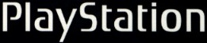
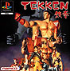
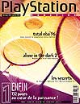
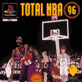

Tout
en chiffres!
Voici,
en gros, tous les chiffres concernants la Playstation depuis son arrivée.
Histoire de vous faire rêver...! Ces chiffres viennent directement
du site officiel de Sony, ainsi que les images. Ces images leur appartiennent
ainsi que le texte.


Le projet R&D PlayStation
de Sony est officialisé.
L'équipe de
5 personnes dirigée par Ken Kutaragi
compte désormais
10 membres. La Play arrive!
Le projet R&D PlayStation
est terminé, la
société
Sony Computer Entertainment est
créée
et Ken Kutaragi est nommé vice-président, Division R&D.
Présentation
de la console PlayStation aux
développeurs
européens au nouveau siège social à Londres.
Présentation
de la console PlayStation aux développeurs américains.
Création de
la société Sony Computer
Entertainment America
Inc. à Foster City, en Californie.
Lancement de la PlayStation
sur le marché
japonais. Prix de
vente conseillé : 39 800 yens.
Création de
Sony Computer Entertainment
Europe (SCEE) dont
le siège social est basé à Londres, Royaume-Uni.
Au Japon, les ventes
de consoles dépassent le million d'unités.
Lancement de la PlayStation
sur le marché américain ; en deux
jours, plus de 100
000 unités sont vendues rapportant plus de 45
millions de dollars.
Prix de vente conseillé : 299 dollars US.
Lancement de la PlayStation
sur le marché européen ; Prix de
vente conseillé
: 2 099 francs(fr). Dès le premier week-end du
lancement, la base
installée en France atteint 30 000
unités.
Les 7 premiers jeux
qui accompagnent le lancement de la console
sont Ridge
Racer, Tekken, Destruction Derby, WipEout,
Air Combat, Battle
Arena Toshinden, Rayman.
Tekken de Namco devient
le premier jeu à franchir le cap du million
d'unités vendues
dans le monde. Un record historique!

Lancement de la première
campagne de
publicité télévisée
européenne pour la PlayStation (Comité Anti PlayStation).
Lancement de la PlayStation
sur le marché australien et néo-zélandais.
Lancement en France
du Magazine Officiel de la PlayStation avec
CD de démonstration,
édité par Hachette Disney Presse.

34 titres de jeux pour
la PlayStation sont désormais
disponibles sur le
marché européen. 18 d'entre eux
sont lancés
par des éditeurs tiers.
Les ventes mondiales
de la PlayStation atteignent 3,4 millions
d'unités.
Sortie sur le marché
du premier jeu développé entièrement
en interne par Sony
Computer Entertainment Europe : Total NBA 96.
Plus de 700
000 PlayStation ont été livrées sur le marché
européen.

Europe : SCEE ramène
le prix conseillé
de la PlayStation
de 2 099 à 1 490 francs.
Etats-Unis : le prix
de vente conseillé est
ramené de 299
à 199 dollars US.
!!!LA
SUITE!!!